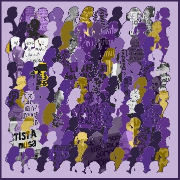
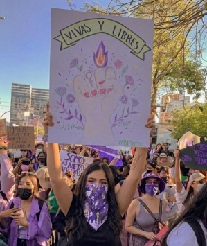
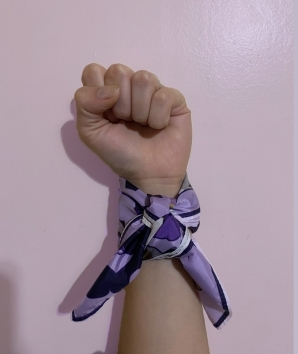
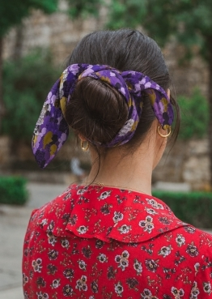

La propuesta del pañuelo
La pieza busca representar a cada una de las mujeres que lucharon por nuestros derechos en el pasado y también a quienes seguimos defendiéndolos y ampliándolos en la actualidad.
El pañuelo reúne siluetas, consignas y registros visuales vinculados con marchas y manifestaciones. Desde esa composición colectiva, la imagen construye una trama donde la memoria, el reclamo y la presencia de las mujeres aparecen como una fuerza compartida.
Una lucha entre generaciones
En el diseño pueden observarse siluetas de niñas, adolescentes, mujeres adultas y mujeres mayores, con el objetivo de reflejar que esta lucha atraviesa generaciones y acompaña a las mujeres en todas las etapas de la vida.
Dentro de cada una de las siluetas aparecen carteles tomados de marchas y manifestaciones, destacando palabras y frases que simbolizan los reclamos, las conquistas y la fuerza colectiva del movimiento.
Color, visibilidad y memoria
La elección de los colores también posee un significado particular. El violeta representa al movimiento Ni Una Menos y a la lucha por la igualdad y el fin de la violencia de género.
Los tonos grises simbolizan el paso del tiempo y las distintas generaciones que formaron parte de esta causa, mientras que el amarillo cumple la función de resaltar el violeta, otorgándole mayor visibilidad y poniendo en valor una lucha que continúa vigente en la actualidad.
Reflexión de la actividad
La propuesta invita a reconocer que la equidad y el respeto por nuestros derechos y nuestras vidas no son conquistas cerradas, sino una construcción que requiere continuidad, memoria y participación colectiva.
Galería del pañuelo



